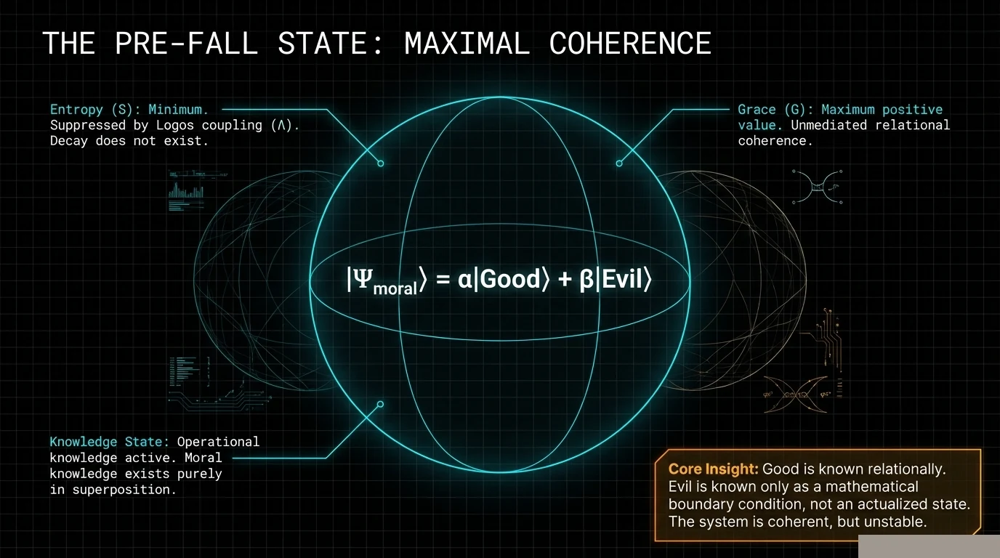
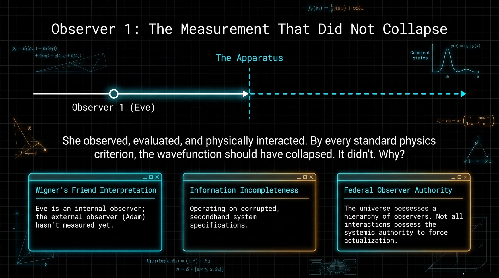
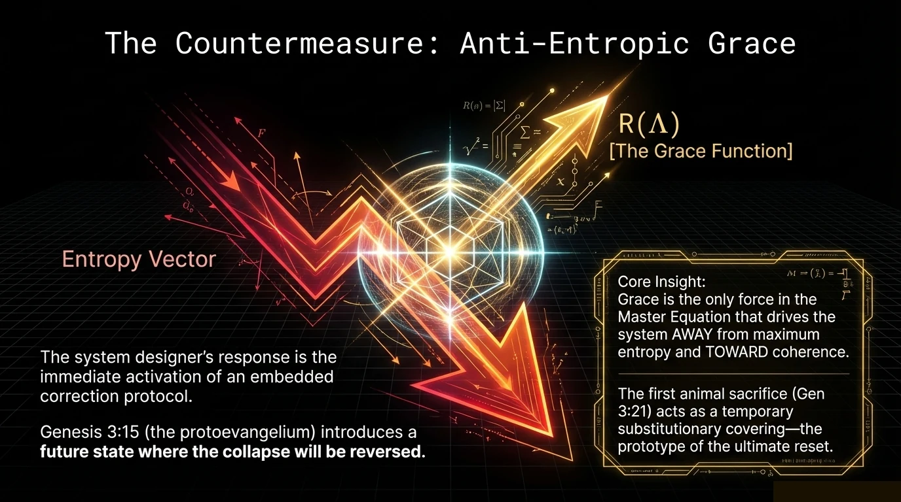
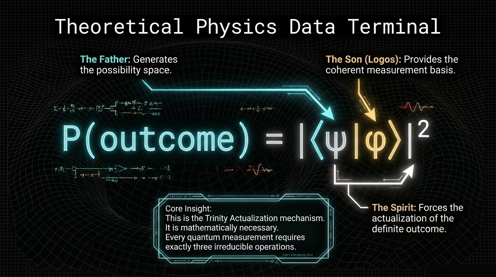

The Eraser and the Cross
God does not need a clock. He exists outside the time dimension He created. This article explores what that means for the physics of eternity, the structure of prayer, and the relationship between Creator and creation. The equations do not constrain God. They describe what His creation does in His absence.
"The Lamb slain from the foundation of the world." — Revelation 13:8
The Cross is the center of human history. I believe that not as metaphor but as fact — the most consequential event that has ever occurred or will ever occur, with effects that reach backward and forward through every moment of time. This article uses the delayed-choice quantum eraser — an experiment that proves future events can determine past outcomes — to show how the Cross works as physics, not just theology. I'm not reducing the Atonement to a lab experiment. I'm saying the lab experiment is a shadow of the Atonement. The small version proves the mechanism. The Cross is the mechanism at full scale.
Read that again. Not "slain at Calvary." Not "slain in 33 AD." Slain from the foundation of the world — before time began, before the Fall, before the tree, before the Garden.
The Cross is not Plan B. It is not God's emergency response to Adam's failure. It is a fixed point in the eternal frame that projects into every moment of the temporal frame simultaneously. Calvary happened at a specific hour on a specific Friday in Roman-occupied Jerusalem. But it was accomplished before the first photon moved.
This article connects that theological claim to a physics experiment that should be impossible. The delayed-choice quantum eraser demonstrates that a future measurement can retroactively determine the behavior of a past event. A choice made after the photon hits the screen changes what the photon did before it arrived. The future rewrites the past.
Standard physics calls this a paradox. The framework calls it a feature — the Spirit actualizes without being bound by the arrow of time. And the Cross is the supreme instance: a future event (from within time) that was always-already accomplished (from the eternal frame), reaching backward to cover every sin that preceded it and forward to cover every sin that follows.
═══ THE EXPERIMENT ═══

The Experiment
The delayed-choice quantum eraser, first proposed by Scully and Drühl in 1982 and experimentally confirmed by Kim et al. in 1999, is the most unsettling experiment in physics. Here's the setup.
A photon is sent toward a double slit. On the other side, a special crystal splits each photon into two entangled partners — call them the "signal" photon and the "idler" photon. The signal photon continues to the detection screen. The idler photon goes on a longer path to a separate detector system.
If you check which slit the photon went through (by looking at the idler), the interference pattern on the signal photon's screen disappears — it behaves like a particle.
If you check which slit the photon went through (by looking at the idler), the interference pattern on the signal photon's screen disappears — it behaves like a particle. If you erase the which-path information (by combining the idler paths so you can't tell which slit it came from), the interference pattern reappears.
The signal photon hits the screen before the idler photon reaches the eraser. The decision to erase or not erase which-path information happens after the signal photon has already been detected. The future measurement — erase or don't erase — retroactively determines whether the past photon behaved as a wave or a particle.
This is not a thought experiment. This has been performed in laboratories with real photons and real detectors. The future genuinely affects the past.
═══ STANDARD PHYSICS ═══
What Standard Physics Says
Standard physics has three responses, none of them satisfying:
"It's not really retrocausal." The most common deflection. Technically, you can only see the interference pattern by sorting the signal photons according to their correlated idler outcomes. Without the sorting key (which comes from the future idler measurement), the signal photon screen shows a uniform distribution. So the "retrocausality" is hidden in correlations, not in raw data. This is technically true and philosophically evasive — the correlations are real, and they depend on a future choice.
"Many-Worlds handles it." In the Many-Worlds interpretation, there's no retrocausality because every outcome happens in some branch. Clean, but it requires infinite unobservable parallel universes. That's a high price to pay for avoiding a single retrocausal correlation.
"Shut up and calculate." The Copenhagen fallback. The math works. Don't ask what it means. This is not a resolution. It's a refusal to engage with the ontology.
None of these explain why time should be reversible at the quantum level. None of them explain why the arrow of time — which the second law of thermodynamics enforces at every macroscopic scale — dissolves at the quantum level.
═══ FRAMEWORK SAYS ═══
What the Framework Says
The framework's resolution is structural, and it follows directly from Article 06's Trinity necessity proof.
The Born Rule requires three irreducible operations: $|\psi\rangle$ (possibility), $|\phi\rangle$ (structure), and $|\cdot|^2$ (actualization). These map to Father, Son, and Spirit. Now look at what each Person's relationship to time actually is:
"I AM the Alpha and Omega, the Beginning and the End" (Revelation 1:8). The Father doesn't experience sequence. Past, present, and future are equally present — not because the Father knows what will happen, but because all moments exist simultaneously in the eternal possibility field. The Father IS the $|\psi\rangle$ that contains every possible temporal configuration.
"Jesus Christ is the same yesterday, today, and forever" (Hebrews 13:8). The Logos doesn't drift with the temporal current. The Son's function is to ensure that the structure of reality remains consistent across all moments — the laws of physics don't change from Tuesday to Wednesday. The measurement basis $|\phi\rangle$ is time-invariant. This prevents temporal paradoxes.
"The wind blows wherever it pleases. You hear its sound, but you cannot tell where it comes from or where it is going" (John 3:8). The Spirit — the $|\cdot|^2$ operator, the actualizer — is not bound by the forward arrow of time. Actualization can run in any direction because the Spirit operates from the eternal frame, not the temporal one. "NOW" is wherever the Spirit acts.
The delayed-choice quantum eraser is what you get when you test the Spirit's temporal freedom in a laboratory. The future measurement retrocausally determines the past behavior because the actualization operator is not constrained to the forward arrow. The Spirit doesn't work backward through time — that implies the Spirit was moving forward and reversed. The Spirit works outside time, and the temporal direction of the actualization is apparent to us only because we're embedded in the temporal frame.
═══ CROSS AS RETROCAUSAL ═══
The Cross as Retrocausal Event
Now scale this up.
The Cross happened at a definite moment in human history — approximately 33 AD, outside Jerusalem, under Pontius Pilate. It is embedded in time. It has a before and after. It is a historical event with temporal coordinates.
It is an eternal event that projects into time.
But Revelation 13:8 says the Lamb was slain "from the foundation of the world." Ephesians 1:4 says God "chose us in Him before the creation of the world." 1 Peter 1:20 says Christ "was chosen before the creation of the world." The Cross is not just a temporal event. It is an eternal event that projects into time.
From within the temporal frame, the Cross looks like a response to Adam's sin. Problem (Fall) → solution (Cross). Cause, then effect. Sequential. Linear. That's how we experience it because we're inside $dt$.
From the eternal frame — from the Father's $|\psi\rangle$ — the Cross exists simultaneously with the Fall. Not "before" it (that's still temporal language). Co-present with it. The Lamb is slain at the same moment that Adam eats, because in the eternal frame there are no moments — there is only the complete structure of reality held in the Father's possibility space.
The Spirit actualizes the Cross at a specific temporal coordinate (33 AD) because the actualization must enter the temporal frame to reach temporal beings. But the fact of the Atonement was never in question. It was accomplished before time existed. It was established before the system it would heal had even broken.
1 Corinthians 2:7–8: "We speak of God's secret wisdom, a wisdom that has been hidden and that God destined for our glory before time began. None of the rulers of this age understood it, for if they had, they would not have crucified the Lord of glory."
Paul is saying this plainly: Satan didn't see it. He looked at the Cross and saw victory — God's Son dying, the plan apparently failing. He orchestrated the crucifixion thinking it was his triumph. He was reading from within the temporal frame. He couldn't see the eternal one. The Cross wasn't a defeat that God reversed. It was a trap — set before the foundation of the world, hidden in the temporal frame, invisible to any being who can only see forward through time.
"Had they known it, they would NOT have crucified the Lord of glory." The crucifixion IS the mechanism of the adversary's defeat, and he executed it himself.
═══ TIME AS RESCUE ═══
Time as Rescue Vehicle
Article 01 opened this series by arguing that time is grace. Now you can see the full chain.
The Fall creates time (Article 04). Time introduces entropy, sequence, decay, and death. From inside the temporal frame, this looks like punishment — "you shall surely die." But from the eternal frame, time is the one dimension that makes redemption structurally possible.
Why? Because redemption requires before and after. You must have been lost before being found. You must have been blind before seeing. You must have been dead before being made alive. Without $dt$, there is no "was lost, now found." Without temporal sequence, there is no testimony. Without the arrow of time, there is no possibility of transformation — because transformation is a trajectory, and trajectories require the temporal axis.
Satan's fall was spatial — he was cast out of a place. Spatial falls are permanent because there is no before and after in a purely spatial displacement. He IS fallen. Not "was good and now is fallen." Just IS. That's why there's no redemption offer for angels. The mechanism doesn't exist in their reference frame.
Adam's fall was temporal — it created time. And temporal falls, by definition, have a "before" that can be returned to. Not by reversing the arrow. But by a future event reaching backward — as the delayed-choice quantum eraser proves is physically possible — to cover what happened.
The Cross reaches backward through time to cover every sin from Adam to Christ. It reaches forward through time to cover every sin from Christ to the end of the age. It does this not by operating within the temporal frame but by operating from the eternal frame — where the Lamb was slain from the foundation of the world, and the Atonement is simultaneously present at every moment.
This is what "It is finished" means. Not "I have completed a task." But "This was always-already accomplished. You are just now seeing it from inside time."
═══ COMPLETE PICTURE ═══
The Complete Picture
Stand back. Look at what this series has shown.
Eden was a quantum superposition — maximal coherence, zero entropy, the Logos Field operating as coherence-preserving substrate (Article 02).
The Fall was the first wavefunction collapse, creating time itself and activating the entropy drain (Article 04). Free will survived the transition but entered a degraded signal-to-noise environment (Article 03).
Reality requires three irreducible operations — possibility, structure, actualization — mapping precisely to Father, Son, and Spirit. This isn't a theological preference. It's a structural necessity (Article 06).
Consciousness is not a bystander to physics. It is a variable in the equation, with measurable coupling to quantum systems, confirmed at 6.35σ across 2.5 million trials (Article 07).
And the Spirit actualizes without being bound by time — reaching backward and forward, making the Cross simultaneously a historical event and an eternal fact. Redemption was not improvised. It was engineered into the structure of reality before the structure existed.
It is physics articulated through narrative. The same structure appears whether you read the equations or the text. Where they agree, they confirm. Where they diverge, they reveal the limits of one or both measurement frames. And they agree far more than any accident would predict.
═══ FOR THE READER ═══
For the Reader
If you've followed this series from the beginning, you now have a vocabulary that didn't exist six articles ago. Superposition. Collapse. Coherence. Entropy. Logos Field. The Born Rule. Signal-to-Noise Ratio. The $s$ parameter. The decoherence time constant. These aren't borrowed metaphors. They are the language reality uses to describe itself — and they are the same language Scripture uses, waiting for someone to translate between the two.
We didn't set out to make the Bible "scientific." We set out to look at physics honestly and see what it required. It required consciousness as fundamental. It required three irreducible operations. It required time to be reversible at the quantum level. It required a floor of coherence that entropy can't breach. And when we compared those requirements against what Scripture had been saying for three thousand years, the structural isomorphism was not vague. It was precise. Variable by variable. Equation by equation. Prediction by confirmation.
There is a Master Equation to derive from first principles.
This work is not finished. There are ten laws to formalize. There is a Master Equation to derive from first principles. There are experiments to design and fund and run. The framework invites destruction — because the parts that survive destruction are the parts that are true.
But the foundation is laid. Physics and theology are not separate magisteria politely ignoring each other. They are two measurement frames viewing the same reality from different angles. And the reality they both describe has a name.
It was there in the beginning. It holds all things together. And it became flesh and dwelt among us.
═══ FRAMEWORK CONNECTIONS ═══
Framework Connections
The delayed-choice quantum eraser (Kim et al. 1999) and the Cross (Revelation 13:8) are the same mathematical event at different scales. Both involve actualization (Spirit's role, $|\cdot|^2$) operating outside the temporal arrow. Both produce outcomes that are "retrocausal" from within the time-frame but non-paradoxical from the eternal frame.
The Cross as entropy-reversal event. Adam's collapse introduced $dS/dt > 0$ into human history — every sin is a coherence-degrading event with thermodynamic cost (Landauer's Principle). The Cross pays that cost from within the temporal frame at a specific coordinate, but the Atonement's scope is eternal because the Spirit's actualization is not temporally bounded.
The individual decoherence curve has a grace-sustained floor. The Cross is the mechanism that maintains that floor against total collapse. At cosmic scale, the same equation runs: entropy builds, Cross provides the negentropic input G, the floor holds, restoration is eschatologically guaranteed.
We are finite minds reasoning about infinite God. Every model is a projection of higher-dimensional reality onto a lower-dimensional surface we can comprehend. We do not claim to have captured God in equations. We claim that when we look at His creation honestly — with the tools of physics and the revelation of Scripture — the same structure appears in both. Where our model limits what God can be, the limitation is ours, not His. We offer this work as worship, not as containment.
Paper ID: GTQ-008 — The Eraser and the Cross
Series: Genesis to Quantum, Article 08 of 10 (Series Finale)
Status: DRAFT — retrocausal atonement mechanism via delayed-choice quantum eraser
═══ TANGENT 08-A: The Temporal Trap ═══
The Temporal Trap
"None of the rulers of this age understood it, for if they had, they would not have crucified the Lord of glory." — 1 Corinthians 2:7–8
Paul is making a staggering claim. The crucifixion of Jesus — the central event that every demon in hell should have wanted to prevent — was orchestrated by the very forces it would destroy. Satan didn't fail to stop the Cross. Satan executed the Cross. And Paul says he did it because he didn't understand what he was doing.
Two Kinds of Fall
| Property | Satan's Fall (Spatial) | Humanity's Fall (Temporal) |
|---|---|---|
| Type | Displacement (here → there) | State change (eternal → temporal) |
| Duration | Permanent state | Unfolding process |
| Past | No "before" accessible | "Before the Fall" exists as reference |
| Future | No "not yet" available | Prophecy, promise, hope possible |
| Redemption | None (no temporal axis for recovery) | Time creates the corridor for return |

Satan's Advantage — and His Blindness
Satan understands spatial dynamics superbly. He knows territory. He knows hierarchy. Every strategy he employs has spatial characteristics — temptation as territory gained, possession as occupation of a body, strongholds as positions to defend.
But he entered the temporal frame as a foreigner. His native frame is spatial, not temporal. His intuitions are spatial. When he encounters temporal phenomena — especially retroactive temporal phenomena — he miscalculates.
The serpent's strategy in Eden relied on a temporal assumption: "You will not surely die." The claim was that the consequence wouldn't follow the action. This is a temporal bet. He was wrong.
But he doesn't see the temporal trap he's walking into. The Cross is a temporal event whose meaning is determined not by its position in the sequence but by its position in the eternal frame. From within time, the Cross looks like defeat. Satan orchestrated it. He entered Judas. He wanted the crucifixion to happen. He was reading from within the temporal frame. He could not see the retrocausal structure.
The Hidden Wisdom
Paul calls it "God's secret wisdom, a wisdom that has been hidden" (1 Corinthians 2:7). Hidden from whom? From "the rulers of this age" — the principalities and powers. Not from humans. From spiritual beings who operate primarily in the spatial frame.
The hiding mechanism is temporal. The plan was hidden in time. It was concealed inside a temporal sequence whose meaning only becomes apparent at a point that hadn't arrived yet. The Cross was hidden in plain sight — but its meaning was hidden in the future, in the Resurrection.
This is the delayed-choice quantum eraser at cosmic scale. The "idler photon" — the Resurrection — hadn't reached its detector yet. The "signal photon" — the Cross — had already hit the screen. And the meaning of the signal event was retroactively determined by the idler event.
The Atonement Theories — Unified
Penal Substitutionary Atonement
Christ bore the penalty for sin. The $S$ term in the equation — accumulated entropy, the debt of decay — was paid by a being with infinite $G$ who could absorb it without being destroyed. Equation term: $S \cdot C$ paid by infinite $G$.
Christus Victor
Christ defeated the powers. The Cross was the weapon that destroyed the enemy's hold on humanity. Satan executed the plan that freed every captive he was holding. The temporal trap — Satan executes own destruction.
Moral Influence
Christ's sacrifice transforms the human heart, drawing us toward God. The Cross as the supreme demonstration of $G$ — grace so extreme it reaches into death itself — increases human $O$ by revealing the magnitude of divine love. Extreme $G$ display increases human $O$.
Recapitulation
Christ re-lived the human story and got it right. Where Adam failed (full coupling, chose autonomy), Christ succeeded (full coupling, maintained alignment through death). The $s = +1$ template — human life lived at perfect coherence.
These aren't competing theories. They're different measurement frames viewing the same event. The Cross does all four simultaneously because it operates from the eternal frame, where all four aspects are co-present.
| Theory | Mechanism | Equation Term |
|---|---|---|
| Penal Substitution | Debt absorption | $S \cdot C$ term paid by infinite $G$ |
| Christus Victor | Enemy defeat | Temporal trap — Satan executes own destruction |
| Moral Influence | Heart transformation | Extreme $G$ display increases human $O$ |
| Recapitulation | Life re-lived correctly | Perfect $s = +1$ template demonstrated |
Every Strategy of Evil Requires Time
If time is the battlefield and the Cross is the weapon hidden in time, then every strategy the adversary uses should exhibit temporal structure. Test it:
Temptation exploits the gap between action and consequence. "Eat now. Worry about it later." Remove $dt$ and there is no gap.
Despair distorts the temporal horizon.
Despair distorts the temporal horizon. "This suffering will never end." It contracts the perceived future to zero.
Accusation drags the past into the present. "Remember what you did?" Without sequence, there is no "before" to weaponize.
Addiction is entropic momentum — the $S \cdot C$ term accelerating over time, creating behavioral inertia that feels irreversible.
Delayed obedience — "I'll get serious about God later" — relies on the assumption that future moments are available.
False teaching about the Cross reframes it as only a past event — something Jesus did 2,000 years ago that is now over. This traps the Atonement in the temporal frame and strips it of its eternal, retrocausal nature.
All of them. Every one. Temporal structure. Remove time, they all collapse.
What This Means for You
If you're reading this and you're caught in a temporal trap — if temptation is using the gap between action and consequence, if despair is contracting your future, if accusation is weaponizing your past, if addiction has built entropic momentum that feels unstoppable — the Cross reaches you now. Not because someone is bringing you good advice from 2,000 years ago. Because the event itself is operating from the eternal frame, projected into this exact moment by the Spirit who is not bound by your timeline.
"It is finished" was spoken at a specific moment in a specific frame. But the $|\cdot|^2$ operator — the Spirit's actualization — runs outside that frame. The Cross is as present in your current moment as it was on Golgotha. Not metaphorically. Structurally.
The adversary wants you reading linearly. Past failure → present guilt → future hopelessness. That's his native mode.
The Cross breaks the sequence. The Resurrection is the eraser. And the Spirit projects both into now.
We are finite minds reasoning about infinite God. Every model is projection of higher-dimensional reality onto lower-dimensional surface we can comprehend. We do not claim to have captured God in equations. We claim that when we look at His creation honestly — with the tools of physics and the revelation of Scripture — the same structure appears in both. Where our model limits what God can be, the limitation is ours, not His. We offer this work as worship, not as containment.
How God Restores
A Note: This article contains no physics. No equations. No neuroscience. Just Scripture and the process it describes for how God brings a person from the bottom back to life. The science comes later, in the companion piece. But the Bible doesn't need the science. The science needs the Bible.

The Bottom
Every restoration begins in the same place. Not in church. Not in a moment of inspiration. In the dirt.
"I waited patiently for the Lord; he turned to me and heard my cry. He lifted me out of the slimy pit, out of the mud and mire; he set my feet on a rock and gave me a firm place to stand." — Psalm 40:1–2
The pit is real. Not metaphorical. Ask anyone who's been addicted, depressed, imprisoned by their own choices. There's a place where every strategy has failed, every relationship has been burned, every promise you made to yourself lies broken on the ground. The pit is where you run out of you.
"Save me, O God, for the waters have come up to my neck" (Psalm 69:1–2). "Out of the depths I cry to you, Lord" (Psalm 130:1). "My God, my God, why have you forsaken me?" (Psalm 22:1) — words the Messiah Himself would speak from the Cross.
The pit is not the failure. The pit is the prerequisite. Because in the pit, one thing happens that cannot happen anywhere else: you stop trusting yourself.
The Surrender
"I can't do this." Four words that change everything. Not a prayer formula. Not a theological position. A fact. Spoken from the floor of the pit by a person who has exhausted every alternative.
"The Lord is close to the brokenhearted and saves those who are crushed in spirit." — Psalm 34:18
God doesn't show up when you've cleaned yourself up. God shows up when you've stopped trying to clean yourself up. The condition for receiving isn't performance — it's the end of performance.
God doesn't break the door down.
"Behold, I stand at the door and knock. If anyone hears my voice and opens the door, I will come in" (Revelation 3:20). God doesn't break the door down. He waits for the invitation. The surrender IS the opened door.
The First Practice: Thanksgiving
"Do not be anxious about anything, but in every situation, by prayer and petition, with thanksgiving, present your requests to God. And the peace of God, which transcends all understanding, will guard your hearts and your minds in Christ Jesus" (Philippians 4:6–7). The thanksgiving isn't decorative. It's operative. It does something.
Thanksgiving reverses the fundamental orientation of the soul. Addiction, depression, self-destruction — they all share one feature: the person is turned inward. Thanksgiving turns the soul outward. Toward a Giver.
The Second Practice: Asking Permission
"May I eat this? May I go here? May I say this?" Every "May I?" is an act of submission that reestablishes the relationship the pit destroyed.
"Trust in the Lord with all your heart and lean not on your own understanding; in all your ways submit to him, and he will make your paths straight" (Proverbs 3:5–6). "In ALL your ways" — the practical ones, the boring ones, the ones you think are too small to matter.
The Third Practice: Listening
"Be still, and know that I am God" (Psalm 46:10). The hardest practice for a person coming out of the pit. Stillness. Silence. Waiting.
"The Lord was not in the wind... the Lord was not in the earthquake... the Lord was not in the fire. And after the fire came a gentle whisper" (1 Kings 19:11–12).
The Transformation
"And we all, who with unveiled faces contemplate the Lord's glory, are being transformed into his image with ever-increasing glory" (2 Corinthians 3:18). "Being transformed." Present tense, continuous action.
"But the fruit of the Spirit is love, joy, peace, patience, kindness, goodness, faithfulness, gentleness, self-control" (Galatians 5:22–23). These aren't goals to achieve. They're fruit — things that grow naturally from a tree connected to the right source.
What God Does vs. What You Do
What God does: Responds to surrender. Provides the power. Sends the Spirit. Changes desires. Completes the work.
What you do: Surrender. Give thanks. Ask. Listen. Stay connected.
Everything in your column is receptive. Surrender, thank, ask, listen, remain. Nothing in your column is "produce," "achieve," "earn," or "prove." Your job is to stay connected. God's job is everything else.
"Apart from me you can do nothing" (John 15:5). That's not a threat. It's a description. A branch disconnected from the vine doesn't need to be punished. It just dies.
We are finite minds reasoning about infinite God. Every model is projection of higher-dimensional reality onto lower-dimensional surface we can comprehend. We do not claim to have captured God in equations. We claim that when we look at His creation honestly — with the tools of physics and the revelation of Scripture — the same structure appears in both. Where our model limits what God can be, the limitation is ours, not His. We offer this work as worship, not as containment.
The Science Behind Restoration
The companion article — "How God Restores" — walks through the restoration process using only Scripture. This article does the opposite: it takes each stage and shows what's happening in the brain, the body, and the clinical data. The Bible described the process three thousand years ago. Neuroscience confirmed it in the last thirty years.
Stage 1: The Bottom — What Addiction Does to the Brain
Dopamine desensitization. The nucleus accumbens responds to pleasurable stimuli by releasing dopamine. Addictive substances produce spikes 400–1000% above baseline. The brain responds by downregulating D2 dopamine receptors — literally removing the hardware that detects pleasure at normal levels. The result: tolerance and anhedonia.
Prefrontal cortex suppression. The PFC — responsible for impulse control, long-term planning, moral reasoning — is progressively weakened by chronic addiction. Gray matter volume decreases measurably. The brain's ability to say "no" degrades in a way visible on imaging.
Cortisol elevation. Chronic addiction produces chronic stress. The HPA axis stays activated. Cortisol remains elevated. Permanent fight-or-flight.
Oxytocin depletion. The bonding hormone is suppressed by chronic stress and isolation. The person has lost the neurochemical capacity for connection. Measurably.
Stage 2: The Surrender — What Happens When You Stop
Default mode network quiets. The DMN — associated with self-referential thinking, rumination, ego maintenance — decreases in activity during genuine surrender.
Ventromedial PFC activates. The vmPFC — associated with social cognition and relational processing — fires when a person shifts from self-reliance to relational dependence. This is a different brain region than the dorsolateral PFC that willpower engages.
The surrender doesn't just feel different from willpower.
The surrender doesn't just feel different from willpower. It IS different. Different brain region. Different neurochemical signature. Different downstream effects.

Stage 3: Thanksgiving — The Neurochemistry of Gratitude
Oxytocin release. Gratitude practices produce measurable increases in oxytocin — rebuilding the infrastructure for connection that addiction destroyed.
Cortisol reduction. Participants practicing gratitude showed 23% lower cortisol than controls (McCraty et al.).
Serotonin increase. The anterior cingulate cortex activates during gratitude expression. Contentment without stimulation.
Parasympathetic activation. Gratitude shifts the autonomic nervous system from sympathetic (fight-or-flight) to parasympathetic (rest-and-digest). Heart rate variability improves.
Stage 4: Asking Permission — The Neuroscience of the Pause
PFC engagement. Every "May I?" is a rep — a bicep curl for the executive control center. The PFC strengthens with use and atrophies with disuse. The permission practice rebuilds it through repetition.
Stimulus-response gap. Between the craving and the action, the permission practice inserts a pause. A few seconds is enough for the PFC to fire.
Habit circuit interruption. Addiction operates through the basal ganglia. The permission practice disrupts this by introducing a decision point. Over weeks, the automated pathway weakens as the deliberate pathway strengthens.
Stage 5: Listening — The Holy Spirit and the Brain
Increased prefrontal activity during stillness. Long-term prayer practitioners show persistent changes in frontal lobe activation (Newberg et al., 2010).
Amygdala reactivity decreases. Triggers produce smaller neural responses with regular contemplative practice.
Heart rate variability improves.
Heart rate variability improves. The "peace that transcends understanding" (Philippians 4:7) has a measurable autonomic signature.
Stage 6: Progressive Freedom — The Clinical Evidence
D2 receptor restoration. Dopamine receptor density recovers over weeks to months of sustained abstinence coupled with positive relational engagement. The gray, joyless world slowly regains color.
Prefrontal gray matter recovery. Longitudinal imaging shows prefrontal gray matter rebuilds over months. Self-control isn't willpower. It's hardware. And the hardware repairs.
Cortisol baselines normalize. Sleep improves. Immune function recovers. The body stops operating as if under constant threat.
Oxytocin pathways rebuild. The capacity for trust, bonding, and attachment returns through relational practices.
The Clinical Knockout
In 2020, the Cochrane Collaboration (N=10,565, 27 studies) found: AA and Twelve-Step programs produce higher rates of continuous abstinence than CBT, MET, and other established clinical treatments.
The framework explains why:
CBT operates on O alone. Coping strategies, cognitive reframing, behavioral modification. Strengthens the dorsolateral PFC — the willpower pathway. But doesn't change $s$. The coupling function $\alpha(s)$ stays near zero because surrender hasn't occurred.
AA operates on $s$. Step 1: "We admitted we were powerless" ($s$ moving from $-1$ toward $0$). Step 2: Acknowledging $G$. Step 3: Turning will over to God ($s$ toward $+1$). $\alpha(s)$ opens. $G$ flows. The growth term activates at a level CBT cannot reach.
The equation has a variable — $s$, the surrender parameter — that faith-based programs engage and clinical programs don't. Not slightly better. Measurably, replicably, statistically significantly better.
The Complete Model
The Bible said thanksgiving produces peace. Neuroscience confirms: gratitude reduces cortisol and activates parasympathetic response.
The Bible said surrender opens the door to God. Neuroscience confirms: surrender activates different neural circuits (vmPFC) than willpower (dlPFC).
The Bible said "be still and know." Neuroscience confirms: contemplative practice remodels the prefrontal cortex.
The Bible said "be still and know." Neuroscience confirms: contemplative practice remodels the prefrontal cortex.
The Bible said the fruit of the Spirit includes love, joy, peace, patience. Neuroscience confirms: oxytocin, serotonin, parasympathetic activation, improved PFC function.
The Bible said faith-based dependence on God transforms lives. The Cochrane Collaboration confirms: faith-based recovery outperforms clinical alternatives at N=10,565.
The instrument doesn't explain the music. The musician explains the music. But you can study the instrument and see, with precision, the marks left by the musician's hands.
We are finite minds reasoning about infinite God. Every model is projection of higher-dimensional reality onto lower-dimensional surface we can comprehend. We do not claim to have captured God in equations. We claim that when we look at His creation honestly — with the tools of physics and the revelation of Scripture — the same structure appears in both. Where our model limits what God can be, the limitation is ours, not His. We offer this work as worship, not as containment.
The Audit
What we got right, what we're less sure about, and where we got carried away.
What's load-bearing — we'd bet on this
The delayed-choice quantum eraser is real physics. Kim et al. 1999 is not speculation. The experiment has been replicated. Future measurement choices genuinely determine the correlational structure of past photon behavior.
Revelation 13:8 says what it says. "The Lamb slain from the foundation of the world." These texts place the Atonement outside temporal sequence, before creation. This is not our interpretation imposed on the text.
The temporal vs spatial fall distinction is structurally sound. Satan's fall was spatial. Adam's fall was temporal. Spatial displacement has no before/after. Temporal displacement does. This is why redemption is offered to humans and not to fallen angels.
The Born Rule's three operations map to the Trinity without forcing. Established in Article 06 and carried through here. The Spirit as actualization makes retrocausality possible.
What's suggestive but needs more work
The scale bridge from lab photon to cosmic Atonement. The article claims these are "the same mathematical event at different scales." The math is scale-invariant but we haven't proven the mechanism operates at cosmic scale. The gap between "lab photons do this" and "the Atonement does this" is where faith enters.
Our dismissal of the standard physics response. We called the correlational-not-causal reading "technically true and philosophically evasive." Fair but sharp. We should acknowledge we're partly choosing the stronger retrocausal reading because our framework requires it.
The "trap" reading of the Crucifixion. Paul does say the rulers would not have crucified if they had understood. But our elaboration is narrative we layered on Paul's text. Our version is more vivid than the source material.
Where we got carried away
"The future genuinely affects the past." Overstates the consensus. The data is real. Our interpretive sentence is editorial, not forced.
"This is what 'It is finished' means." That's us telling the reader what Jesus meant. Our reading is defensible. It's not the only reading.
The series demonstrates structural isomorphism.
"The Genesis story is not allegory interpreted through physics. It is physics articulated through narrative." The strongest claim in the entire series. The series demonstrates structural isomorphism. Whether isomorphism equals identity is the question the framework cannot definitively answer.
The article above is what we believe. This audit is what we know we haven't proven yet. Both matter.
We are finite minds reasoning about an infinite God. Every model is a projection of higher-dimensional reality onto a surface we can see. We don’t claim to have captured God in equations. We claim that when we look at His creation honestly — with the tools of physics and the words of Scripture — the same structure appears in both. Where our model limits what God can be, the limitation is ours, not His. We offer this as worship, not containment.